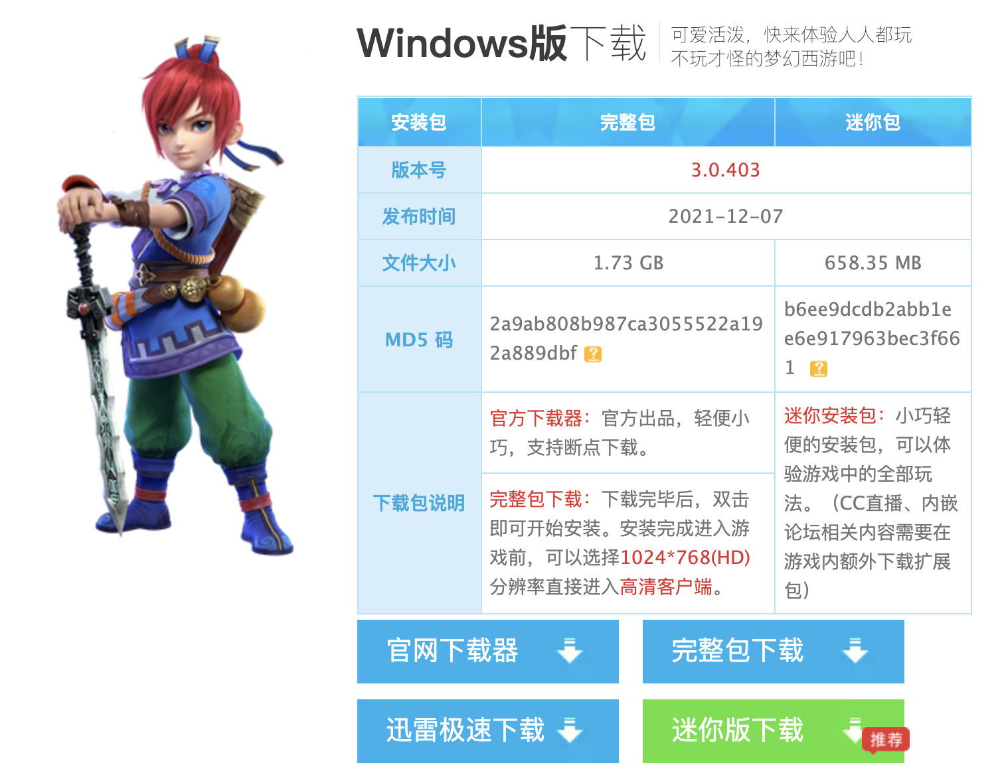
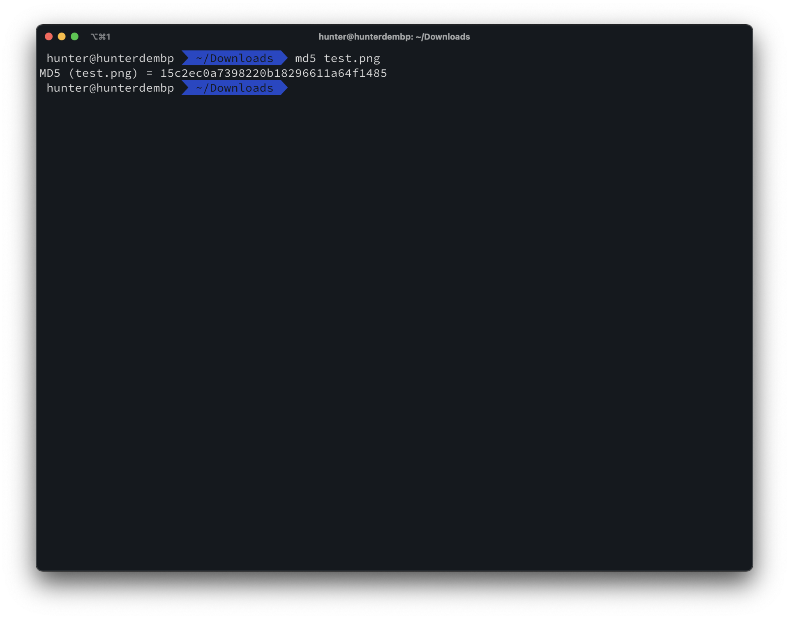
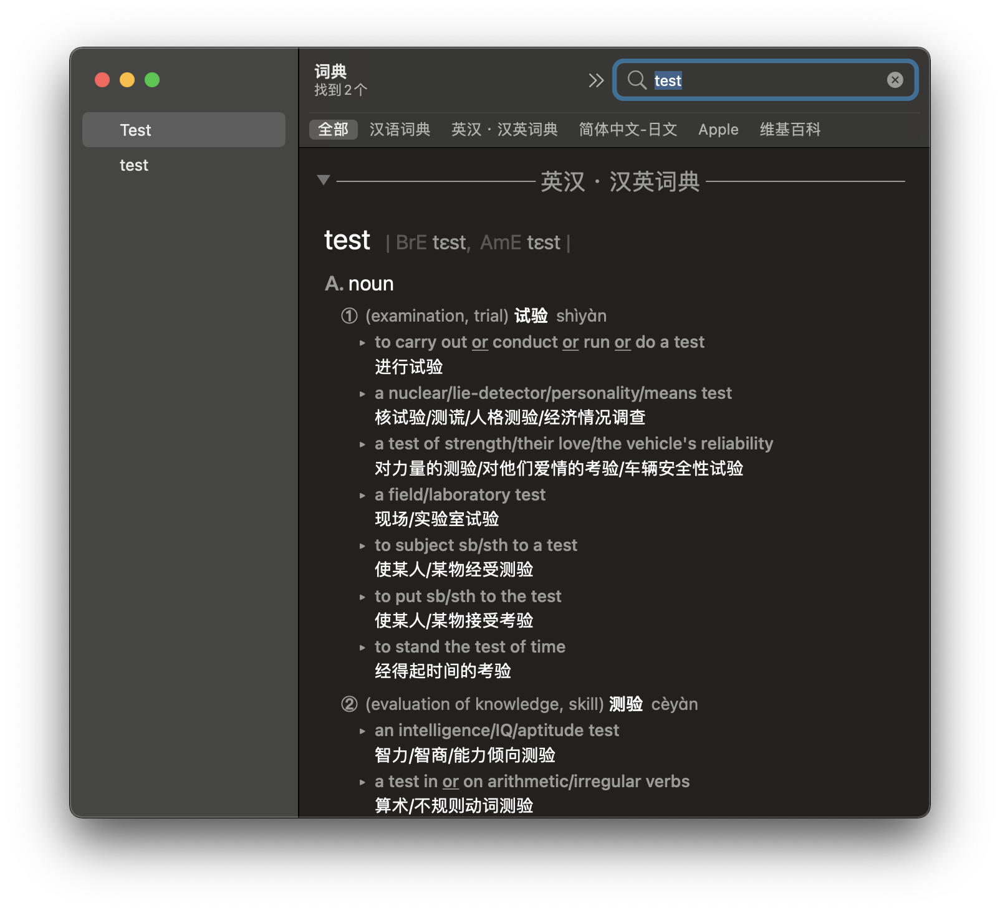
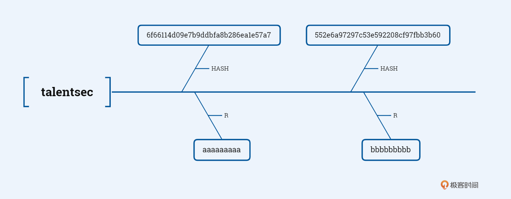
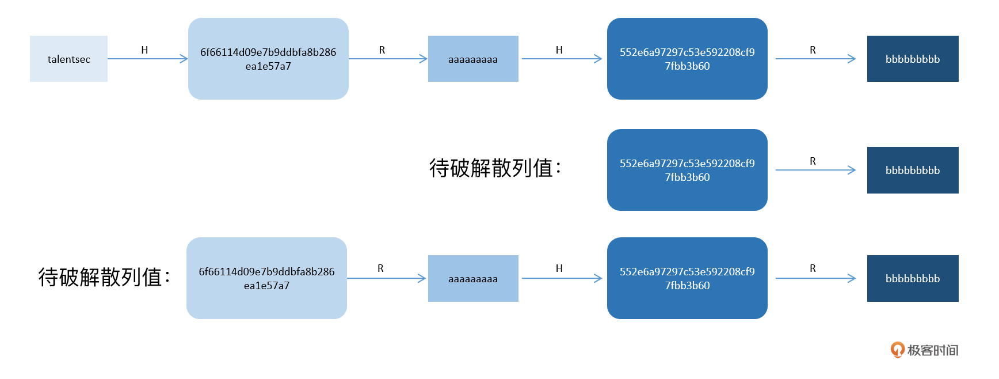
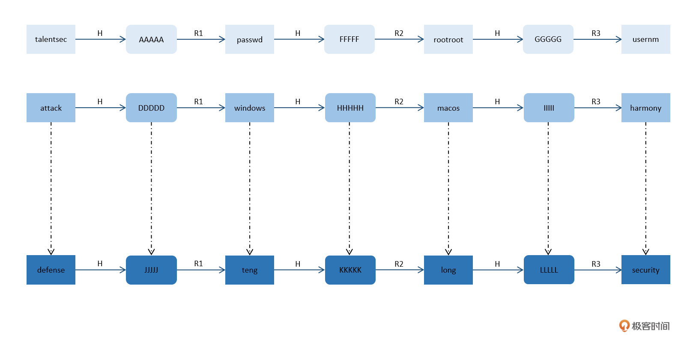
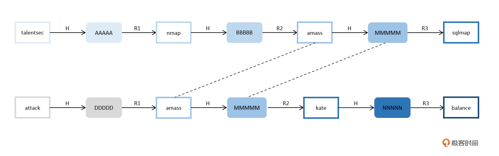
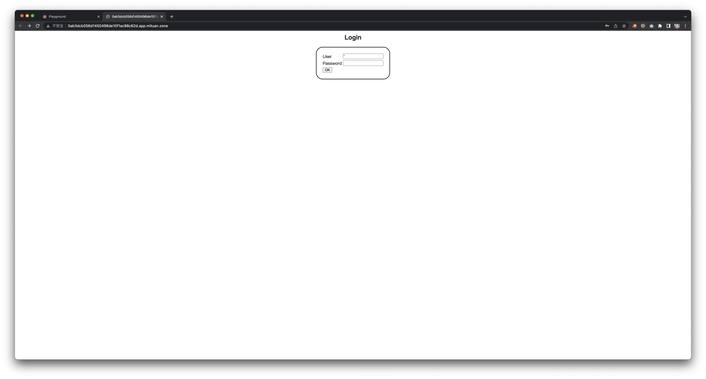
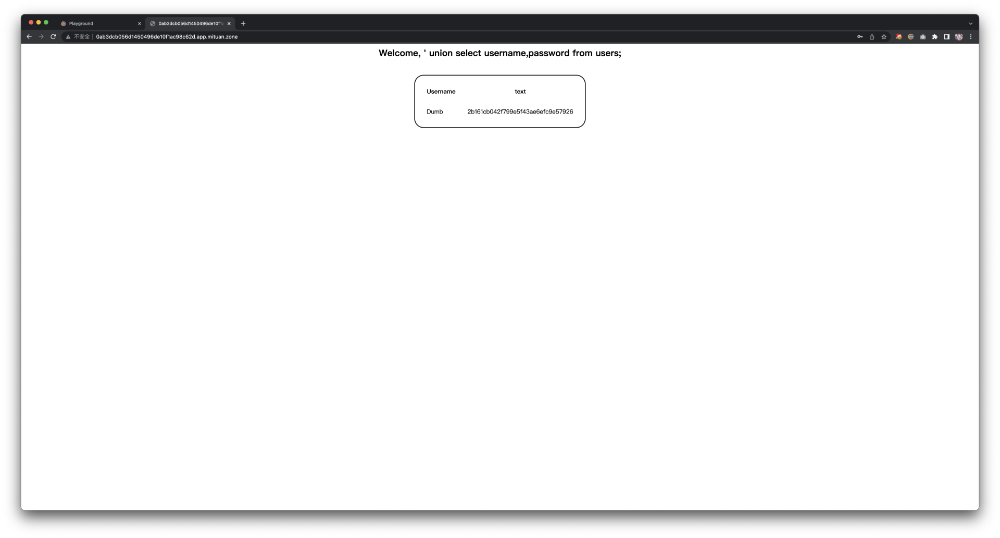

- 00 导读 解读OWASP Top10 2021.md.html
- 00 开篇词 从黑客的视角找漏洞，从安全的角度优雅coding.md.html
- 01 失效的访问控制：攻击者如何获取其他用户信息？.md.html
- 02 路径穿越：你的Web应用系统成了攻击者的资源管理器？.md.html
- 03 敏感数据泄露：攻击者如何获取用户账户？.md.html
- 04 权限不合理：攻击者进来就是root权限？.md.html
- 05 CSRF：为什么用户的操作他自己不承认？.md.html
- 06 加密失败：使用了加密算法也会被破解吗？.md.html
- 07 弱编码：程序之间的沟通语言安全吗？.md.html
- 08 数字证书：攻击者可以伪造证书吗？.md.html
- 09 密码算法问题：数学知识如何提高代码可靠性？.md.html
- 10 弱随机数生成器：攻击者如何预测随机数？.md.html
- 11 忘记加“盐”：加密结果强度不够吗？.md.html
- 12 注入（上）：SQL注入起手式.md.html
- 13 注入（下）：SQL注入技战法及相关安全实践.md.html
- 14 自动化注入神器（一）：sqlmap的设计思路解析.md.html
- 15 自动化注入神器（二）：sqlmap的设计架构解析.md.html
- 16 自动化注入神器（三）：sqlmap的核心实现拆解.md.html
- 17 自动化注入神器（四）：sqlmap的核心功能解析.md.html
- 19 失效的输入检测（上）：攻击者有哪些绕过方案？.md.html
- 20 失效的输入检测（下）：攻击者有哪些绕过方案？.md.html
- 21 XSS（上）：前端攻防的主战场.md.html
- 22 XSS（中）：跨站脚本攻击的危害性.md.html
- 23 XSS（下）：检测与防御方案解析.md.html
- 24 资源注入：攻击方式为什么会升级？.md.html
- 25 业务逻辑漏洞：好的开始是成功的一半.md.html
- 26 包含敏感信息的报错：将安全开发标准应用到项目中.md.html
- 27 用户账户安全：账户安全体系设计方案与实践.md.html
- 28 安全配置错误：安全问题不只是代码安全.md.html
- 29 Session与Cookie：账户体系的安全设计原理.md.html
- 30 HTTP Header安全标志：协议级别的安全支持.md.html
- 31 易受攻击和过时的组件：DevSecOps与依赖项安全检查.md.html
- 32 软件和数据完整性故障：SolarWinds事件的幕后⿊⼿.md.html
- 33 SSRF：穿越边界防护的利刃.md.html
- 34 Crawler VS Fuzzing：DAST与机器学习.md.html
- 35 自动化攻防：低代码驱动的渗透工具积累.md.html
- 36 智能攻防：构建个性化攻防平台.md.html
- 大咖助场 数字证书，困境与未来.md.html
- 春节策划（一） 视频课内容精选：Web渗透测试工具教学.md.html
- 春节策划（三） 一套测试题，看看对课程内容的掌握情况.md.html
- 春节策划（二） 给你推荐4本Web安全图书.md.html
- 结束语 无畏前行.md.html
- 捐赠
11 忘记加“盐”：加密结果强度不够吗？
你好，我是王昊天。今天我来和你一起来聊聊“盐”。
什么是盐？
食盐是一种调味品，可以在烹饪食物时添加到菜肴中，给寡淡的食材增添风味。恰好我对烹饪也有一点研究，所以对食盐的作用也稍有理解。食盐是菜品中咸味的主要来源，在烹饪中加入适量的食盐，一方面可以提鲜，另一方面也可以去除掉原料的一些异味。
那么盐和安全有什么关系呢？
盐又称为Salt，在密码学中我们常常会用到散列算法对字符串进行处理，散列算法可以为数据创建相对精简的数据指纹，具体我们会在后面详细介绍。为了提高安全性，在进行散列操作之前会对字符串进行一些拼接、混淆操作，这个过程我们就称为“加盐”。虽然不知道“加盐”的本意是否如此，但加盐处理字符串的过程与使用盐处理食物的过程非常相似，一方面去除了字符串本身的特征，另一方面增强了字符串的复杂度。
经过加盐处理的散列结果与未加盐处理的散列结果，极大概率是不相同的，这一过程大大提高了散列算法的安全性。
HASH
在了解调味品该如何使用之前，我们要先了解原材料是什么。因此，在了解如何用盐之前，我们先来了解HASH函数是什么。
HASH函数，又称散列函数，是为一段数据创建数字指纹的方法，创建生成的数字指纹叫散列值。由于经过了压缩，它的长度较原始输入短了很多，因此我们也称之为摘要。
由HASH函数计算出来的散列值具有不可逆的特性，这里说的不可逆，是指攻击者无法从散列值进行逆向推导，进而获得原始输入。得益于不可逆特性，在Web业务系统开发过程中，我们通常使用散列值作为用户密码存储进数据库。在这种情况下，Web业务系统既可以校验用户密码的正确性，又无法真正得知用户密码明文。
HASH的应用
HASH函数具备很多优秀的特性，比如计算不可逆、难以伪造、数据压缩等，因此它具备很多应用场景。
基于计算不可逆和难以伪造这两个优秀的安全特性，HASH函数的一个主要应用场景，就是校验数据传递的完整性。将要传递的数据作为HASH函数的输入，生成散列值A；再在接收端将A作为HASH函数的输入，生成散列值B。通过对比A和B，就可以快速判断出数据传输的完整性和数据的真实性。
许多官方发布的应用、开发组件和二进制可执行程序，都会在下载链接旁边附上对应的散列值，方便终端用户在下载完成之后进行对比。这种方式可以保证终端用户，即使遭遇了DNS污染，中间人攻击，或者官方遭遇入侵导致安装包被替换的情况，也可以清晰地判断出恶意应用。
这是一个我经常玩的游戏（没有收广告费），在官网下载链接页面可以看到提供的MD5散列值：

下载之后要如何操作呢？其实是非常简单的，以Mac OS为例，在Terminal里已经集成了md5命令，我们可以通过md5命令快速计算出一个文件的md5散列值，将其与官网展示的散列值进行对比即可：

基于数据压缩特性，则会有散列表和错误校正等应用场景。
散列表是一种开发中常用的技术手段，它通常被用来根据关键字快速查找数据记录。比较形象的例子是字典，它的关键词是英文单词，而完整的记录则包含了单词的拼写、音标、解释以及例句，这个场景可以理解为一种，从完整的数据记录到单词的映射关系。

错误校正，是开发中常用的另一种技术手段，在数据传输、存储的过程中经常会用到。在数据传输、存储的过程中，由于信号的干扰、物理介质的不稳定性等原因，经常会出现数据错误的情况。这时，我们可以通过计算散列值的方法来判断数据完整性，这种方案就称为冗余校验。更进一步，我们甚至可以通过定义不同的HASH函数，使得冗余校验具备纠错能力。
盐
用户账户认证过程，通常涉及到密码的存储，这就是盐的主要应用场景之一。
我们都知道，密码的存储通常是放在数据库中，关于密码的存储形态有很多种，通常可选的方案包括明文、散列值等。
如果采用明文存储的方案，一旦发生了入侵事件，或者系统存在漏洞使得数据库外泄，就会导致大规模的用户账户外泄，这种安全事件是灾难性的。所以目前大部分系统采取的方案都是存储散列值，在这种情况下，即使是系统也无法得知用户的密码是什么。
通常在采用存储散列值的情况下，系统会通过比较散列值来认证用户。系统通过用户输入获得密码后，会让密码经过HASH函数处理产生一个散列值，并将该散列值与存储在数据库中的散列值进行对比，如果相同则表示认证成功。
我们可以设想一下，在这种方案下，即使黑客通过漏洞成功获得了数据库内的全部数据，他获得的，也仅仅是密码经过HASH函数运算得出的散列值，而这个散列值并不能够帮助他登录系统。
暴力破解和字典攻击
为了达到登录的目的，黑客必须找到一段数据，这段数据的HASH运算结果需要与黑客获得的散列值一致。此时黑客可选的方案是暴力破解、字典攻击和彩虹表攻击。
这三种攻击方式执行的难度由简单到困难，效果也是从差到好。暴力破解和字典攻击的实施过程都非常简单，基本思路都是通过遍历用户密码所有取值来直接找到答案，区别是暴力破解采用遍历的方式是实时计算，而字典攻击会根据预先计算好的结果直接查找。虽然这两种方案执行上非常简单，但实际操作效果却并不理想，主要原因是用户密码的取值空间过于庞大。
这里我们通过简单的计算，来对取值空间有一个更加直观的认识。一般用户密码的单字符可选范围是26个小写字母、26个大写字母、10个数字以及少数特殊字符，我们假设用户密码是8位（要知道8位密码并不算强度很高的设置），那么经过计算，密码合计取值范围就是72万亿。
单字符取值范围 ≈ 26 + 26 + 10 + 10 = 72
8个字符的密码取值空间 = 72 ^ 8 = 722204136308736 ≈ 72万亿
按照每秒能够计算100万个密码的散列值来计算，需要大约8358天，相当于22.9年才能完成密码空间的遍历，很显然这种攻击是无法真正实施的，因此暴力破解攻击无效。
722204136308736 / (1000000 * 3600 * 24) ≈ 8358
按照每个8位密码占据8个字节的存储空间来计算，72万亿的密码空间大约会占据5254TB的存储空间，很显然这种攻击也是无法真正实施的，因此字典攻击也是无效的。
722204136308736 * 8.0 / (1024 * 1024 * 1024 * 1024) ≈ 5254
综合上面的分析，我们可以发现，暴力破解没有空间占用但时间消耗过大，而字典攻击几乎没有时间占用但空间消耗过大。因此，为了有效地对散列值进行攻击，我们需要一种更可行的方案。在这种方案里，我们能够接受多一些的解密时间，但希望它不要占用过大的空间。目前，这种平衡了时间和空间的攻击方案就是彩虹表攻击。
彩虹表攻击
HASH链
以字典攻击为基础，通过算法设计来实现时间换取空间的效果，就是彩虹表攻击的原理。
彩虹表攻击中所涉及的算法就是预计算的HASH链。
为了实现预计算的HASH链，我们需要一个新型函数的辅助，一般会称之为归约函数或者约简函数。但是千万不要为这个名字感到困惑，它其实并没有真实地表达什么含义，你可以简单地理解为一个新函数R。R函数与HASH函数执行相反的运算流程，比如，HASH函数将原始输入映射到HASH散列值，而R函数则是将HASH散列值映射回原始输入，并且R函数的映射关系是可以任意指定的。
接下来我来带你实际构建一个HASH链，在这个过程中，你将对稍显复杂的彩虹表攻击有更直观的理解。
以MD5散列为例，首先我们随机选择一段明文talentsec并对其取md5散列，获得结果6f66114d09e7b9ddbfa8b286ea1e57a7，接下来我们按照自己的喜好定义一个R函数，并且使用R函数对散列值6f66114d09e7b9ddbfa8b286ea1e57a7进行运算，获得结果aaaaaaaaa。继续重复上述过程，即不断使用HASH函数和R函数进行计算，产生的如下链条就是HASH链：

通过随机选择多段明文重复执行这个过程，会产生多个HASH链，这些HASH链我们称为预计算的HASH链集。需要注意的是，存储的过程中我们只需要保存HASH链的头和尾，对于上述示例HASH链，我们只进行了2轮计算，所以其存储形态应该是(talentsec,bbbbbbbbb)。
那么我们要如何使用预计算的HASH链来进行攻击呢？
作为攻击者，我们需要破解一个HASH散列值。通过对该散列值进行多轮次的R函数、HASH函数计算，我们可以取得多个原始输入，如果原始输入与HASH链的头或者尾产生碰撞，HASH散列值的破解结果则很有可能存在于该链条中。
这里我们通过2个场景示例来直接感受一下，对于上述场景，如果我们希望破解的散列值是552e6a97297c53e592208cf97fbb3b6，通过1次R函数可以获得原始输入bbbbbbbbb，成功匹配到HASH链(talentsec,bbbbbbbbb)，通过从头执行HASH链的计算过程，可以得出破解结果是aaaaaaaaa；同样是上述场景，如果我们希望破解的散列值是6f66114d09e7b9ddbfa8b286ea1e57a7，通过R函数-HASH函数-R函数计算可以获得原始输入bbbbbbbbb，依然成功匹配到HASH链(talentsec,bbbbbbbbb)，通过从头执行HASH链的计算过程，可以得出破解结果是talentsec。

值得一提的是，破解中需要的运算轮次，一般与HASH链的计算轮次相同，如果达到了计算轮次却并未找到匹配的HASH链，则直接返回破解失败。
关于预计算HASH链的理想性能表现，我们可以通过简单的计算来分析。依然是8位密码的情况，假设我们定义了一个R函数，让每条HASH链能够执行1亿次计算，那么完成HASH链集的存储只需要大约220MB的空间。
722204136308736 / 50000000 ≈ 14444082 条HASH链
722204136308736 * 16 / (50000000 * 1024 * 1024) ≈ 220 MB
依然按照每秒100万次的速度来计算，单一HASH散列值从生成一条新的HASH链到完成匹配的时间预计不超过2分钟。
100000000 / (1000000 * 60) ≈ 1.67 mins
彩虹表
那么，预计算的HASH链集就是彩虹表吗？其实并非如此。
预计算的HASH链集仍然存在着一些不足，主要是在性能表现方面。我们刚刚计算的攻击时间都是在理想情况下推演出来的，但是未经优秀设计就生成的预计算HASH链集，实际上并不能达到这个性能水平，因此才会出现彩虹表。我们可以将彩虹表理解为是一种经过精密设计的预计算HASH链集，在攻击时能发挥出理想的性能表现。
那么预计算HASH链集需要优化的核心点是哪里呢？接下来我们就一起来分析一下。
通过前面我们所讨论的攻击过程，不难判断，预计算的HASH链集包含多条HASH链，这一点我们从它的名字也不难看出，而每条HASH链能够覆盖的攻击范围，与它执行的计算次数呈现线性相关。最理想的情况当然是，每条HASH链所覆盖的攻击范围彼此互斥，这样在n条链的情况下，覆盖的攻击范围就是n x 单链计算次数/2。但现实往往没有这么理想，R函数的选择与设计可能会导致碰撞情况的发生：

通过上述示例可以发现，存在设计缺陷的R函数会导致大量碰撞的发生，而一旦中间某节点发生碰撞，就会导致后续节点全部碰撞，这样会大大缩小预计算HASH链集能够覆盖的攻击范围。又因为预计算HASH链只保存收尾节点，因此想要发现两条链的高度相似性是非常难的。
彩虹表的出现正是为了解决R函数引起的链碰撞问题。
彩虹表的设计理念是，在生成预计算的HASH链时采用多种R函数，也就是在每个轮次的计算中分别使用R1、R2、R3函数等，大致含义如下：

这样即使发生了之前我们所描述的碰撞情况，通常会是以下这种情况：

可以看到，虽然部分节点发生了碰撞，但是由于发生碰撞的位置并非在同一序列，使用的R函数也不是同一个，因此后续产生的节点也不相同。
这样，即使同一序列位置发生碰撞，导致后续节点完全相同，但是因为末节点是相同的，所以我们仍然可以非常快速地找出这条相似链，删除它来优化存储空间。
而关于彩虹表的使用方法，本质上与HASH链集并无二致，核心思想仍然是计算得出R函数的结果并与HASH链进行匹配。它们的区别在于，计算出的序列结果是否唯一。因为HASH链集使用的是相同的R函数，所以，如果我们对待破解的HASH散列进行R函数计算，所产生的序列结果是唯一的；但是彩虹表使用的是不同的R函数，因此计算时需要将待破解的HASH散列带入不同位置，从而得出多个序列结果。
案例实战
了解了彩虹表的原理和用法，接下来，我们就进入一个真实场景中实战一下。
打开MiTuan并选择【极客时间-漏洞挖掘与智能攻防实战】靶场，进入后选择【忘记加“盐”：加密结果强度不够吗？】靶机环境。
可以看到，这是一个很简单的登录界面。

接下来，我们使用简单的注入来获取用户密码信息：
User = ' union select username,password from users;
Password = 1
如果你不理解这个注入过程，不要担心，下一节课我们就会深入探讨SQL注入漏洞。- 通过简单的注入操作，我们可以获得用户名以及密码信息如下：

Dumb
2b161cb042f799e5f43ae6efc9e57926
接下来我们就尝试使用彩虹表攻击来破解这个HASH散列值。
首先解压我们提供的压缩包，进入rainbow目录后运行如下命令：
docker build -t rainbow:v0 . # 构建镜像
docker run -it rainbow:v0 # 启动容器并获得交互式shell
# 生成 md5哈希函数的 1-9a-zA-Z 最短1位 最长5位 10种不同R函数组合 每条链5000长度 10000条链 0偏移 的彩虹表
./rtgen md5 mixalpha-numeric 1 5 10 10000 60000 0
# 生成彩虹表之后排序，方便结果查找
./rtsort .
# 执行彩虹表破解，极小概率失败，主要是由于彩虹表具有不确定性，因此不能确保成功
./rcrack . -h 2b161cb042f799e5f43ae6efc9e57926
在我的电脑上大约不到1秒就完成破解了，密码明文是t1sec，破解结果如下：
1 rainbow tables found
memory available: 1033964748 bytes
memory for rainbow chain traverse: 160000 bytes per hash, 160000 bytes for 1 hashes
memory for rainbow table buffer: 2 x 960016 bytes
disk: ./md5_mixalpha-numeric#1-5_10_10000x60000_0.rt: 960000 bytes read
disk: finished reading all files
plaintext of 2b161cb042f799e5f43ae6efc9e57926 is t1sec
statistics
----------------------------------------------------------------
plaintext found: 1 of 1
total time: 0.90 s
time of chain traverse: 0.90 s
time of alarm check: 0.00 s
time of disk read: 0.00 s
hash & reduce calculation of chain traverse: 49990000
hash & reduce calculation of alarm check: 49990
number of alarm: 257
performance of chain traverse: 55.54 million/s
performance of alarm check: 16.66 million/s
result
----------------------------------------------------------------
2b161cb042f799e5f43ae6efc9e57926 t1sec hex:7431736563
可以看到彩虹表的查询速度是非常快的，每秒可以执行约5500万条链的查询，实际上本次爆破仅使用了0.9s就已经攻击完成。
安全实践
好，学习了这么多，那么如何存储密码才是安全的呢？
安全级别从低到高，来看看我们都有哪些选择。
首先，最简单也是安全级别最低的方案，是直接存储明文密码secret，这种方式一旦系统遭遇攻击，会导致所有账户密码泄露，因此毫无安全性可言，在实际应用中已经被抛弃了。
接下来，目前一种常见的密码存储方案，就是将明文密码带入一个HASH函数，并将散列值HASH(secret)作为结果存储到数据库，使用这种方案，系统即使受到了入侵，攻击者获得的也只是HASH散列值。但是由于彩虹表的存在，密码依然很容易被破解。
更进一步地，我们可以将明文密码加盐，对加盐结果进行Hush运算HASH(secret+salt)，然后将运算的散列值结果存储到数据库中。在保证每个用户的salt不一样的情况下，这种方案的安全性是可接受的，为了保证这一点，我们可以选择用户名、手机号等信息作为salt。
最后我们来看看，如何从最佳安全实践的角度处理数据。
一般来说，加盐会通过在原始字段的特定位置增加特定的字符，使其与原始输入不一致，比如用户使用了一个密码：
talentsec
经过MD5处理后，可以得出结果：
MD5 ("talentsec") = 0fd2671a7c179391e3e3ebb6ec70fa8f
很明显，该密码长度仅有9位，且完全使用小写英文字母。这样的密码取值空间很小，因此是很容易被彩虹表攻击的。因此，我们选择在用户的密码后添加特定的字符串，来增加它的安全性，比如新增用户的用户名：
MD5 ("talentsecwwwhhhttt") = 91a9740ca090824cb00c4be0a319fb89
可以看到加盐之后密码位数变长了，同时散列结果也发生了变化。- 考虑到数据长度大幅增加，攻击者直接使用彩虹表攻击难度非常高。如果想要成功攻击散列值，攻击者则需要了解加盐的逻辑，并且以此逻辑重新生成彩虹表。即便如此，因为每个用户的加盐都是不一样的，攻击复杂度也只能针对单一密码降低，攻击者仍然无法使用彩虹表实现批量攻击，从结果上看，这将大大提高密码存储的安全性。
总结
回顾一下，这节课我们认识了一种系统开发中的调味品——“盐“。
首先，我们对“盐“是什么有了一个形象的认知，与做菜相似，系统中通过使用“盐“（salt）来混淆输入。而关于盐的使用，又不得不提HASH函数。作为一种特殊的密码学算法，HASH函数具备计算不可逆、数据长度压缩、难以伪造等特性，这些优秀的特性给它带来了非常多的应用场景，比如数据传递过程中的完整性校验、数据压缩与摘要、数据纠错与散列表等等。
正如人们由于烧菜时味道不够而生产了盐，在系统开发中，由于过去存储密码的方案安全性不足，因此引入了”盐“的概念。过去在系统中，普遍采用经过HASH函数运算的散列值来存储用户密码，这一过程面临的攻击主要包括暴力破解、字典攻击，但是这两种攻击方式因为在时间和空间上的损耗过高，所以难以真正实施。
彩虹表的出现打破了平静，它推翻了直接将用户密码运算出HASH散列值的方案，通过特殊设计的算法实现了时空平衡，这让攻击HASH散列值成为可能。
于是我们进一步分析了这种设计巧妙的攻击算法，验证了它对传统密码存储方案的威胁。而且我们不甘心于纸上谈兵，通过一个实战案例成功完成了一次彩虹表攻击。掌握了这种攻击方法，你就可以将它集成到自己的个性化智能攻击系统中。
最后，我们再次站在安全开发的角度，从目前普遍接受的安全实践出发，复现了最佳实践方案。
通过这节课的学习，相信你不仅掌握了HASH函数、盐、散列函数应用和安全最佳实践，还丰富了自己的智能攻击系统，使其功能更加强大。有了这些知识和装备的加持，相信你可以在安全领域进一步探索前行，发现更多二进制世界的秘密！
思考
在使用HASH链进行HASH散列值破解的过程中，如果原始输入与HASH链的头或者尾产生碰撞，为什么是很大可能性而不是一定在该链条中存在HASH散列值的破解结果呢？
欢迎在评论区留下你的思考，我们下节课再见。
© 2019 - 2023 Liangliang Lee. Powered by gin and hexo-theme-book.